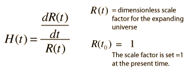
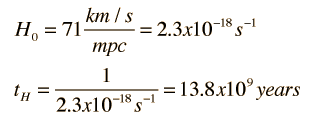

Hubble Parameter
The proportionality between recession velocity and distance in the Hubble Law is called the Hubble constant, or more appropriately the Hubble parameter since it does depend upon time. In recent years the value of the Hubble parameter has been considerably refined, and the current value given by the WMAP mission is 71 km/s per megaparsec.
The recession velocities of distant galaxies are known from the red shift, but the distances are much more uncertain. Distance measurement to nearby galaxies uses Cepheid variables as the main standard candle, but more distant galaxies must be examined to determine the Hubble constant since the direct Cepheid distances are all within the range of the gravitational pull of the local cluster. Use of the Hubble Space Telescope has permitted the detection of Cepheid variables in the Virgo cluster which have contributed to refinement of the distance scale.
The Particle Data Group documents quote a "best modern value" of the Hubble constant as 72 km/s per megaparsec (+/- 10%). This value comes from the use of type Ia supernovae (which give relative distances to about 5%) along with data from Cepheid variables gathered by the Hubble Space Telescope. The value from the WMAP survey is 71 km/s per megaparsec.
Another approach to the Hubble parameter gives emphasis to the fact that space itself is expanding, and at any given time can be described by a dimensionless scale factor R(t). The Hubble parameter is the ratio of the rate of change of the scale factor to the current value of the scale factor R:

The scale factor R for a given observed object in the expanding universe relative to R0 = 1 at the present time may be implied from the z parameter expression of the redshift. The Hubble parameter has the dimensions of inverse time, so a Hubble time tH may be obtained by inverting the present value of the Hubble parameter.

One must use caution in interpreting this "Hubble time" since the relationship of the expansion time to the Hubble time is different for the radiation dominated era and the mass dominated era. Projections of the expansion time may be made from the expansion models.
|